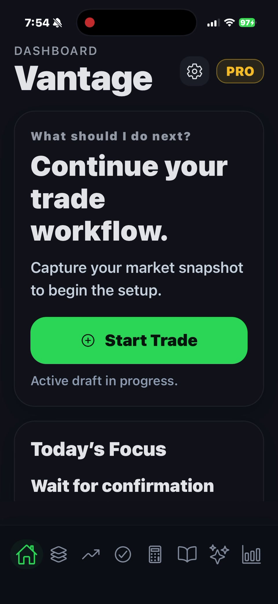
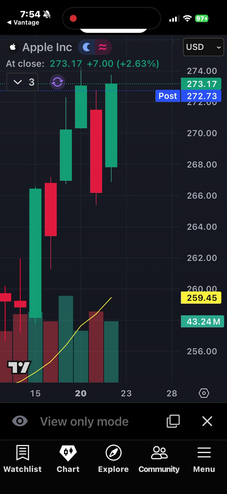
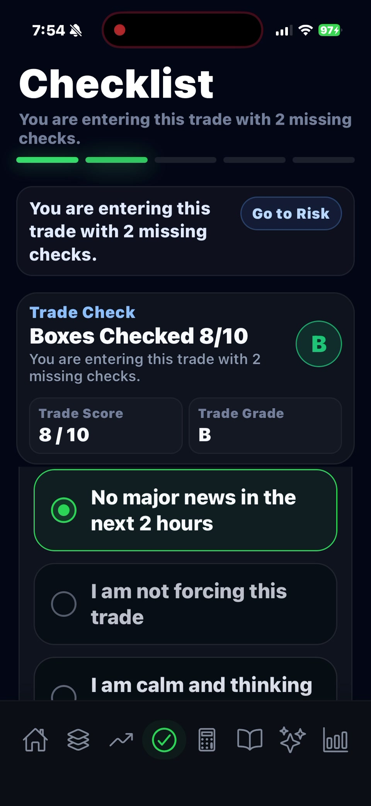
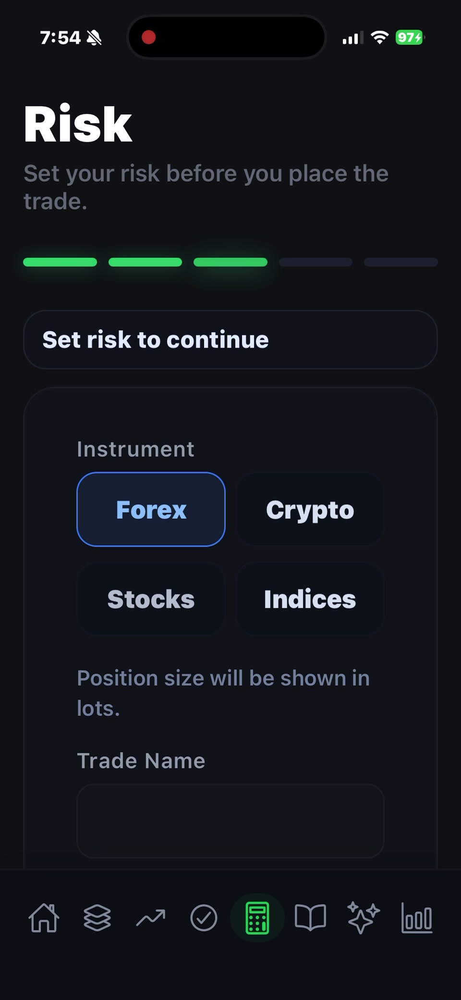
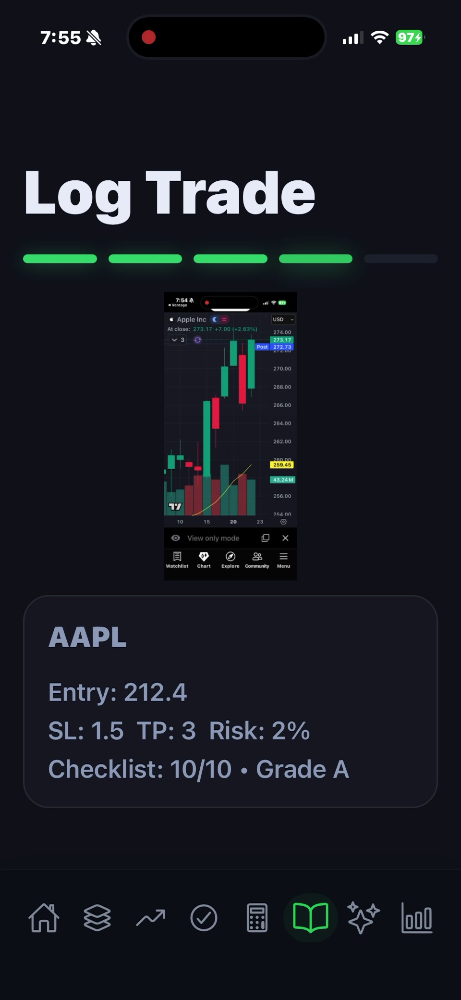
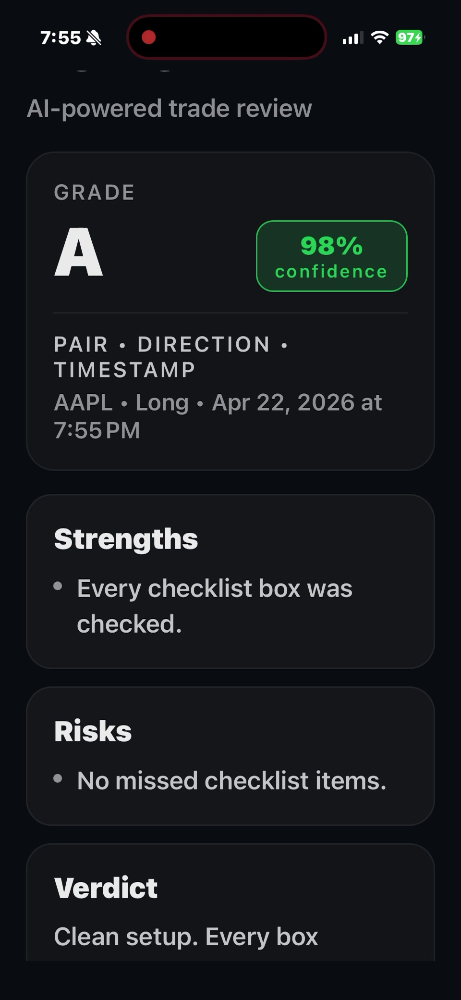

01
Execution system
Trade your plan
Vantage is built around disciplined execution, giving traders a structured operating flow instead of emotional clicking and random decision-making.
Vantage brings structure to the trading process with guided workflow steps, risk controls, screenshot-based journaling, and AI-assisted review — all wrapped in a premium, focused interface.
See how Vantage guides traders from setup to review.
Vantage is not built around noise. It is built around process: quality filtering, cleaner risk decisions, tighter journaling, and a disciplined review loop that helps traders improve with intention.
Deep navy, sharp contrast, execution green, and subtle signal gold create a modern trading identity that feels serious from the first screen.
The product experience is designed to feel elevated while still doing the real job: helping users become more deliberate before, during, and after a trade.
Vantage is built around disciplined execution, giving traders a structured operating flow instead of emotional clicking and random decision-making.
Every setup gets graded before risk is committed, helping users filter weak trades and reinforce repeatable behavior.
Position size, stop loss, and take profit are set before a trade is logged, keeping the process sharp, objective, and accountable.
Chart screenshots, trade notes, and post-trade analysis work together to create a tighter feedback loop over time.
Vantage guides users through each trade step in order, reducing skipped decisions and making the whole process feel more intentional and professional.
From chart review to checklist validation, risk calculation, trade journaling, and AI-assisted post-trade analysis, the whole experience is built to move traders through a cleaner discipline loop.

A clean home base for checklist grade, outcome tracking, quick actions, and trade-state awareness.

Use your preferred charting workflow, capture the screenshot, and bring the setup back into a structured process.

Multi-timeframe validation keeps trades honest and turns discipline into something visible and repeatable.

Set account risk, stop loss, take profit, and lot sizing with a cleaner decision path before execution.

Tie setup data, screenshot context, and execution details together so every trade becomes reviewable.

Post-trade analysis reinforces what was strong, what carried risk, and what needs to improve next.
Serious traders do not need more noise. They need a cleaner operating system.
Vantage is built to reduce impulsive behavior and strengthen repeatable execution.
The product is designed around decision discipline, not hype, signals, or gimmicks.
The positioning is intentionally simple: early access first, then a clean core plan, then a premium tier for users who want more from the Vantage operating system.
Limited rollout for early users who want first access, direct product influence, and launch pricing.
Launching soonFor disciplined solo traders who want a structured process, better journaling, and cleaner review habits.
Planned entry tierFor traders who want the full premium experience, deeper workflow support, and advanced review positioning.
Planned premium tierGet launch updates, early access opportunities, and first access to the premium Vantage experience.
Vantage Trading Solutions provides tools designed to assist traders in structuring and reviewing their trading activity. The information provided by this platform is for educational and informational purposes only and does not constitute financial, investment, or trading advice.
Trading in financial markets involves substantial risk and may result in the loss of capital. Past performance is not indicative of future results. Users are solely responsible for their own trading decisions and outcomes.
Vantage does not guarantee the accuracy, completeness, or reliability of any information presented within the application or on this website. Use of this platform is at your own risk.
By using this website and associated applications, you agree that Vantage Trading Solutions and its operators are not liable for any financial losses, damages, or consequences resulting from the use of this product.